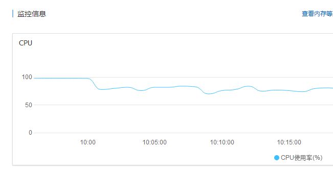

今天工作的时候接触到客户的一台服务器，业务逻辑比较简单 。估算pv在120w左右吧，用的是阿里云2c4g的服务器。一大早就开始卡顿了，登陆服务器后查看负载到了八九十。
之后就想办法调整一下吧。突然想起某位前辈说过的：开启opcache吧，真的会变快的。
于是我马上就开始整，过程很简单
1.进入php,ini 搜索opcache 。
2,修改对应参数(如下)
1 zend_extension=opcache.so #引入扩展 php7中默认已经装好了 可能是鼓励大家用吧
2 [opcache]
3 ;opcache开关
4 opcache.enable=1
5
6 ;CLI环境下，PHP启用OPcache
7 opcache.enable_cli=1
8
9 ;OPcache共享内存存储大小,单位MB
10 opcache.memory_consumption=128
11
12 ;PHP使用了一种叫做字符串驻留（string interning）的技术来改善性能。例如，如果你在代码中使用了1000次字符串“foobar”，在PHP内部只会在第一使用这个字符串的时候分配一个不可变的内存区域来存储这个字符串，其他的999次使用都会直接指向这个内存区域。这个选项则会把这个特性提升一个层次——默认情况下这个不可变的内存区域只会存在于单个php-fpm的进程中，如果设置了这个选项，那么它将会在所有的php-fpm进程中共享。在比较大的应用中，这可以非常有效地节约内存，提高应用的性能。
13 这个选项的值是以兆字节（megabytes）作为单位，如果把它设置为16，则表示16MB，默认是4MB
14 opcache.interned_strings_buffer=8
15
16 ;这个选项用于控制内存中最多可以缓存多少个PHP文件。这个选项必须得设置得足够大，大于你的项目中的所有PHP文件的总和。
17 设置值取值范围最小值是 200，最大值在 PHP 5.5.6 之前是 100000，PHP 5.5.6 及之后是 1000000。也就是说在200到1000000之间。
18 opcache.max_accelerated_files=10000
19
20 ;设置缓存的过期时间（单位是秒）,为0的话每次都要检查
21 opcache.revalidate_freq=60
22
23 ;从字面上理解就是“允许更快速关闭”。它的作用是在单个请求结束时提供一种更快速的机制来调用代码中的析构器，从而加快PHP的响应速度和PHP进程资源的回收速度，这样应用程序可以更快速地响应下一个请求。把它设置为1就可以使用这个机制了。
24 opcache.fast_shutdown=1
25
26 ;如果启用（设置为1），OPcache会在opcache.revalidate_freq设置的秒数去检测文件的时间戳（timestamp）检查脚本是否更新。
27 如果这个选项被禁用（设置为0），opcache.revalidate_freq会被忽略，PHP文件永远不会被检查。这意味着如果你修改了你的代码，然后你把它更新到服务器上，再在浏览器上请求更新的代码对应的功能，你会看不到更新的效果
28 强烈建议你在生产环境中设置为0，更新代码后，再平滑重启PHP和web服务器。
29 opcache.validate_timestamps=0
30
31 ;开启Opcache File Cache(实验性), 通过开启这个, 我们可以让Opcache把opcode缓存缓存到外部文件中, 对于一些脚本, 会有很明显的性能提升.
32 这样PHP就会在/tmp目录下Cache一些Opcode的二进制导出文件, 可以跨PHP生命周期存在.
33 opcache.file_cache=/tmp4.重启php服务器 (如果有配置问题的话会对应报错 检查后重做)
5.检查扩展是否已经可用 php -m 查看是否有opcache ,或者phpinfo()中进行查看。
6.检查程序是否有相应错误，开启后可能对部分程序有影响（特别是那种依赖于注释的程序，对对对就是那种删除注释会报错那种）
7.完成 验证效果。
简单说一下opcache 为什么会加快php的效率。 php 属于解释型语言，每次执行都要经过解释器来进行翻译 形成字节码，而应该程序定型了之后基本是就不会进行变化的。
而opcache就把这个内容缓存到内存中。降低了重复没有必要的劳动，进行减负。
至于性能对应，明天我上一下图。效果还是很明显的。服务器开始从满负载到70%左右

下面有一份更加详细的配置说明有需要的可以看一下。
1 opcache.enable boolean
2 启用操作码缓存。如果禁用此选项，则不会优化和缓存代码。 在运行期使用 ini_set() 函数只能禁用 opcache.enable 设置，不可以启用此设置。 如果在脚本中尝试启用此设置项会产生警告。
3
4 opcache.enable_cli boolean
5 仅针对 CLI 版本的 PHP 启用操作码缓存。 通常被用来测试和调试。
6
7 opcache.memory_consumption integer
8 OPcache 的共享内存大小，以兆字节为单位。
9
10 opcache.interned_strings_buffer integer
11 用来存储临时字符串的内存大小，以兆字节为单位。 PHP 5.3.0 之前的版本会忽略此配置指令。
12
13 opcache.max_accelerated_files integer
14 OPcache 哈希表中可存储的脚本文件数量上限。 真实的取值是在质数集合 { 223, 463, 983, 1979, 3907, 7963, 16229, 32531, 65407, 130987 } 中找到的第一个比设置值大的质数。 设置值取值范围最小值是 200，最大值在 PHP 5.5.6 之前是 100000，PHP 5.5.6 及之后是 1000000。
15
16 opcache.max_wasted_percentage integer
17 浪费内存的上限，以百分比计。 如果达到此上限，那么 OPcache 将产生重新启动续发事件。
18
19 opcache.use_cwd boolean
20 如果启用，OPcache 将在哈希表的脚本键之后附加改脚本的工作目录， 以避免同名脚本冲突的问题。 禁用此选项可以提高性能，但是可能会导致应用崩溃。
21
22 opcache.validate_timestamps boolean
23 如果启用，那么 OPcache 会每隔 opcache.revalidate_freq 设定的秒数 检查脚本是否更新。 如果禁用此选项，你必须使用 opcache_reset() 或者 opcache_invalidate() 函数来手动重置 OPcache，也可以 通过重启 Web 服务器来使文件系统更改生效。
24
25 opcache.revalidate_freq integer
26 检查脚本时间戳是否有更新的周期，以秒为单位。 设置为 0 会导致针对每个请求， OPcache 都会检查脚本更新。
27 如果 opcache.validate_timestamps 配置指令设置为禁用，那么此设置项将会被忽略。
28
29 opcache.revalidate_path boolean
30 如果禁用此选项，在同一个 include_path 已存在的缓存文件会被重用。 因此，将无法找到不在包含路径下的同名文件。
31
32 opcache.save_comments boolean
33 如果禁用，脚本文件中的注释内容将不会被包含到操作码缓存文件， 这样可以有效减小优化后的文件体积。 禁用此配置指令可能会导致一些依赖注释或注解的 应用或框架无法正常工作， 比如： Doctrine， Zend Framework 2 以及 PHPUnit。
34
35 opcache.load_comments boolean
36 如果禁用，则即使文件中包含注释，也不会加载这些注释内容。 本选项可以和 opcache.save_comments 一起使用，以实现按需加载注释内容。
37
38 opcache.fast_shutdown boolean
39 如果启用，则会使用快速停止续发事件。 所谓快速停止续发事件是指依赖 Zend 引擎的内存管理模块 一次释放全部请求变量的内存，而不是依次释放每一个已分配的内存块。
40
41 opcache.enable_file_override boolean
42 如果启用，则在调用函数 file_exists()， is_file() 以及 is_readable() 的时候， 都会检查操作码缓存，无论文件是否已经被缓存。 如果应用中包含检查 PHP 脚本存在性和可读性的功能，这样可以提升性能。 但是如果禁用了 opcache.validate_timestamps 选项， 可能存在返回过时数据的风险。
43
44 opcache.optimization_level integer
45 控制优化级别的二进制位掩码。
46
47 opcache.inherited_hack boolean
48 在 PHP 5.3 之前的版本，OPcache 会存储代码中使用 DECLARE_CLASS 操作码 来实现继承的位置。当文件被加载之后，OPcache 会尝试使用当前环境来绑定被继承的类。 由于当前脚本中可能并不需要 DECLARE_CLASS 操作码，如果这样的脚本需要对应的操作码被定义时， 可能无法运行。
49 在 PHP 5.3 及后续版本中，此配置指令会被忽略。
50
51 opcache.dups_fix boolean
52 仅作为针对 “不可重定义类”错误的一种解决方案。
53
54 opcache.blacklist_filename string
55 OPcache 黑名单文件位置。 黑名单文件为文本文件，包含了不进行预编译优化的文件名，每行一个文件名。 黑名单中的文件名可以使用通配符，也可以使用前缀。 此文件中以分号（;）开头的行将被视为注释。
56
57 简单的黑名单文件可能如下所示：
58
59 ; 将特定文件加入到黑名单
60 /var/www/broken.php
61 ; 以字符 x 文件打头的文件
62 /var/www/x
63 ; 通配符匹配
64 /var/www/*-broken.php
65
67 opcache.max_file_size integer
68 以字节为单位的缓存的文件大小上限。设置为 0 表示缓存全部文件。
69
70 opcache.consistency_checks integer
71 如果是非 0 值，OPcache 将会每隔 N 次请求检查缓存校验和。 N 即为此配置指令的设置值。 由于此选项对于性能有较大影响，请尽在调试环境使用。
72
73 opcache.force_restart_timeout integer
74 如果缓存处于非激活状态，等待多少秒之后计划重启。 如果超出了设定时间，则 OPcache 模块将杀除持有缓存锁的进程， 并进行重启。
75 如果选项 opcache.log_verbosity_level 设置为 3 或者 3 以上的数值，当发生重启时将在日志中记录一条错误信息。
76
77 opcache.error_log string
78 OPcache 模块的错误日志文件。 如果留空，则视为 stderr， 错误日志将被送往标准错误输出 （通常情况下是 Web 服务器的错误日志文件）。
79
80 opcache.log_verbosity_level integer
81 OPcache 模块的日志级别。 默认情况下，仅有致命级别（0）及错误级别（1）的日志会被记录。 其他可用的级别有：警告（2），信息（3）和调试（4）。
82
83 opcache.preferred_memory_model string
84 OPcache 首选的内存模块。 如果留空，OPcache 会选择适用的模块， 通常情况下，自动选择就可以满足需求。
85 可选值包括： mmap，shm, posix 以及 win32。
86
87 opcache.protect_memory boolean
88 保护共享内存，以避免执行脚本时发生非预期的写入。 仅用于内部调试。
89
90 opcache.mmap_base string
91 在 Windows 平台上共享内存段的基地址。 所有的 PHP 进程都将共享内存映射到同样的地址空间。 使用此配置指令避免“无法重新附加到基地址”的错误。
92
93 opcache.restrict_api string
94 仅允许路径是以指定字符串开始的 PHP 脚本调用 OPcache API 函数。 默认值为空字符串 ""，表示不做限
95